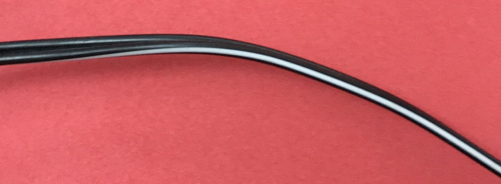
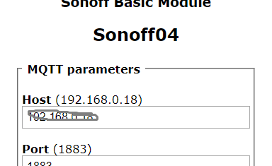

Elektrisch
Probephase
Für die erste Einrichtung das USB-Kabel mit RF-Bridge verbinden und ins Netzteil stecken. Der das grüne Licht am
schwarzen Kasten leuchtet wenn das Gerät an ist
Bei Installation draussen
Da ich weiss das sowohl beim Empfänger an der Laterne, als auch beim Zahlenschloss bereits 12V zur Verfügung stehen,
habe ich eine Spannungswandler mit in das Gehäuse gepackt. D.h. wenn man das andere Kabel mit Lüsterklemme benutzt
kann die RF-Bridge an das gleiche Netztteil angeschlossen werden. Mit der Lüsterklemme kann man z.b. eine Y-Konfiguration
machen.
Dabei darauf achten das Plus und Minus richtig sind. An dem dünnen Kabel kann man einer Ader einen weissen Streifen
sehen, das ist der Plus-Pol.

An der Lüsterklemme habe ich die Ader zusätzlich rot markiert.
An dem besteheden Netz-Kabel (z.B. oben am Empfänger der unter Lampe) ist der Plus-Pol eventuell auch mit einem weissen
Streifen markiert.
Aber um sicher zu gehen einfach das Multimeter rausholen auf Volt Messung stellen und dann auf das Display schauen.
Ist die schwarze Sonde mit dem Minus-Pol und die rote Sonde mit dem Plus-Pol verbunden steht auf dem Display eine
positive Zahl. Ist die Zahl negativ ist es umgekehrt.
Welche IP und Webinterface
Ich habe die RF Bridge auf zwei stystowlans programmiert. Du solltest daher am server oder am Router sehen welche IP-Address
das Ding bekommen hat.
Mit der IP-Adresse gehst Du in einen Browser und gibst sie ein (evtl. http:// davorschreiben). Wenn dort nach einer
kurzen Weile ein Menü erscheint, musst Du auf "Configuration" klicken.
Wenn nicht, unter "Weitere Hinweise:RF-Bridge koppeln" nachlesen).
Dann auf "Configure MQTT " klicken.

In dieser Maske musst Du die richtige IP-Adresee vom Server eingeben, denn ich glaube ich habe sie falsch eingegeben.
Achtung bevor Du auf "Save" klickst, gehe im (SSH) Terminal des Servers folgendes Kommando ein:
mosquitto_sub -v -t tele/# -t stat/#
Jetzt kannst Du auf "Save" klicken; die RF-Bridge rebooted darufhin. Wenn es geklappt hat wirst nach ca. 10 Sekunden
Meldungen auf dem Terminal sehen die mit
tele/rfbridge oder
stat/rfbridge beginnen.
Unter "Weitere Hinweise:Absicherung beschreibe ich wie Du das Webinterface später abschalten kannst.
Jetzt kannst Du zum ersten Mal den Sender testen: Drücke z.B. dort auf den A-Knopf. Wenn Du ihn loslässt sollte nach
kurzer Verzögerung eine Meldung wie:
tele/rfbridge/RFRECEIVED
Einrichtung der Openhab Items und Regeln
Openhab.cfg
Schaue in deine openhab.cfg ob/wie du dort mqtt eingerichtet hast. Dort gibt es eine Section unter "MQTT Transport"
wo mindest eine Zeile auskommentiert sein müsste. Wenn ja: Lies was zwischen "mqtt:" und ".url="
steht: Das ist der Name des Brokers (Du brauchst ihn bei der Einrichtung der Items) Wenn nein: füge folgende Zeilen
ein:
mqtt:mosq.url=tcp://127.0.0.1:1883
mqtt:mosq.clientId=openhabclient
Dann openhab neustarten und in der openhab.log nachsehen ob es erfolgreich Kontakt zum MQTT Server aufbauen kann. Dort
sollte etwas stehen wie: Starting MQTT broker connection 'mosq'
Items
Packe folgende Zeile in deine .items Datei (oder ein neue z.B. rf.items):
String RfBridge "RfKey [%s]" {mqtt="<[mosq:tele/rfbridge/RFRECEIVED:state:default]"}
Das
mosq am Anfang ist der Name des Brokers das heisst wenn Du eine anderen Namen genommen hast, als in meinem
Beispiel musst Du den anstatt
mosq eintragen.
Zum testen ob da was ankommt habe ich das Item Übergangsweise in die Sitemap eingetragen
z.B.
Text item=RfBridge.
Rules
Nimm die folgende Regel als Beispiel. Zum Testen kanst Du das Ziel-Item bei
sendCommand (hier SONOFF14) auf eine Lampe in der Nähe ändern.
rule "rf key rule"
when
Item RfBridge received update
then
if (RfBridge.state == Uninitialized){
logInfo("rf.rules","Item RfBridge still null")
return
}
val rfKey = transform("JSONPATH","$.RfReceived.RfKey",RfBridge.state.toString)
if (rfKey=="1") sendCommand(SONOFF14,ON)
if (rfKey=="2") sendCommand(SONOFF14,OFF)
end
Die Zahl hinter
Rf-Key entspricht zur Zeit den Tasten A-D auf dem Sender
Andere Sender programmieren
Ich habe euch früher mal (silberne) Sender zugeschickt, die vier Knöpfe haben. (Nicht die mit dem roten Knopf).
Die kann man ebenfalls mit der RF-Bridge benutzen, muss sie jedoch vor umprogrammieren, weil sie im Moment den selben
Code senden wie die "alten" Sender und damit die Szene auslösen würden.
Der Sender den ich mitgeschickt hat feste Codes einprogrammiert und dient als Referenz. Wie das Programmieren geht
siehst Du in diesem Video https://bit.ly/2uSQlAS
Wichtig ist, dass Du die Fernbedienungen wirklich so dicht aneinaderhälst wie in dem Video
Ziel ist es bei jeden der anderen Sender die Knöpfe A-D auf den gleich Code wie den Referenz-Sender zu bringen.
Die RF-Bridge kann theoretisch auch andere Codes lernen, aber so sollte es am einfachsten gehen.
Ist gibt hier ziemlich viel zu schreiben, aber ich fange erstmal mit den ersten Schritten an.
MQTT Passwörter
Schau unter diesem Link rein wie man Passwörter unter mosquitto einrichtet http://www.steves-internet-guide.com/mqtt-username-password-example/
Dann musst natürlich die Passwörter in den Clients einrichten.
Openhab.cfg
Trage in der Openhab.cfg ein:
mqtt:mosq.user= <Den MQTT User den Du eingerichtet hast>
mqtt:mosq.pwd= Dein Super Passwort
Auf der RF-Bridge
Auf das Webinterface gehen und unter &qout;Congfiguration/Configure MQTT&qout; den User und das Passwort eintragen
Bei mir gabs an dieser Stelle Probleme, daher ist das nur Theorie
Wenn alles soweit läuft kann man das Webinterface auf der RF-Bridge abschalten, so dass man sie nur noch über MQTT Kommandos erreicht.